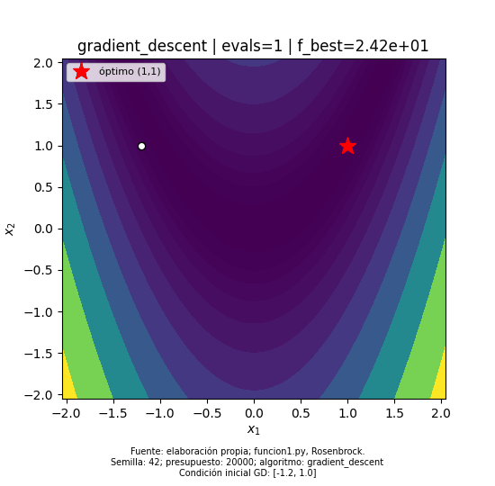

La Figura 1 ilustra el método sobre Rosenbrock en dos dimensiones desde (−1,2; 1). El presupuesto es de 20.000 evaluaciones equivalentes. Completar el presupuesto no significa haber satisfecho la tolerancia del gradiente.

funcion1.py; condición inicial (−1,2; 1), semilla 42, presupuesto 20.000 evaluaciones equivalentes. Parámetros y resultado en metadatos de ejecución. El mapa de fondo es la función matemática, no un mapa geográfico.Esta página puede abrirse localmente. Para que la animación aparezca en el blog hay que publicar el GIF y conservar una referencia accesible en su elemento img. Los archivos locales por sí solos no actualizan el blog.